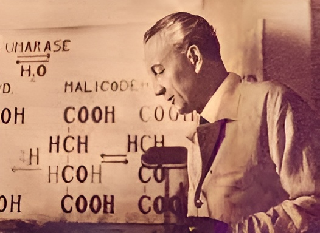

Fatigue Is Not Just Atp
ATP is rapidly replenished within a muscle after a single repetition of lifting maximum weight (1RM), yet strength remains reduced for days. This phenomenon is observed both in muscle fatigue studies and among experienced powerlifters. The question is: Why does it happen? Mainstream cellular physiology, with its emphasis on membranes, pumps, channels, and “high-energy” phosphate bonds, falls short in providing an answer.
1RM lifts require maximal muscle activation and contraction, initiated by a significant increase in intracellular calcium. Calcium, being the primordial cell activator, not only triggers contraction but also, at high concentrations, activates unrelated processes indiscriminately. This includes the production of high levels of free fatty acids (FFA) and lysophospholipids by phospholipases. These molecules have a detergent-like effect that destabilizes the intricate cell structure. Some of the FFA produced are w-6 or w-3, leading to oxidative stress in the form of hydroxyl radicals. A Russian researcher named F.Z. Meerson studied these three phenomena in cardiac damage caused by elevated adrenaline and termed it the “lipid triad.”
One notable observation made by muscle fatigue researchers is that intracellular sodium levels remain elevated for days after maximal muscle contraction, causing the cell to swell as it takes up water. However, explanations provided often resort to ad-hoc explanations about “damaged” sodium pumps.
A more accurate interpretation considers that the cell’s physical state reflects its energetic and functional condition. An energized cell maintains a structured cytoplasm, with water molecules electrostatically coordinated by extended protein backbones. This structure is upheld by electron-withdrawing agents and an uninterrupted flow of electrons from glucose to oxygen. The intermolecular spacing between water molecules, created by this arrangement, preferentially binds potassium while excluding sodium, rendering it relatively hydrophobic, akin to a gelatinized ice.
Following an excitation (bearing in mind that all excitation consumes energy in re-establishing the resting state), the cell temporarily loses this structure. Water becomes more bulk-like, and sodium becomes the preferred ion.
Ideally, after excitation, the cell should return to its high-energy resting state. However, if the excitation has been too intense, causing damage to proteins or mitochondria, the protein backbones, electron-withdrawing agents, and electron flow needed for the resting state may be absent to some extent, resulting in incomplete exit from the excited state.
As structural damage is repaired, coherent water-protein interactions are restored, and excess sodium can be expelled. This repair process involves the proteolysis of damaged proteins tagged by the ubiquitin system, as well as increased synthesis of new RNA, ribosomes, and proteins. It occurs over at least a 72-hour period in the case of 1RM recovery.
While ATP plays a role in this process, its significance is overshadowed by the absolute necessity of CO2 in structuring the cell’s water. Once the lipid triad has occurred, fatigue and diminished functional capacity will be, to some extent, independent of ATP concentrations until the cell’s structure has been fully restored. Any pro-metabolic interventions that enhance CO2 production will expedite the repair process.
This explanation of muscle fatigue is rooted in cell physiology as proposed by Gilbert Ling, often referred to as the “Association Induction Hypothesis.” Ling’s experiments provide compelling evidence that no cell membrane or ionic pumps are necessary to maintain the typical ionic gradients in a cell.
One of Ling’s notable experiments involved placing hemoglobin in tiny dialysis material balls and immersing them in a solution containing both sodium and potassium. Despite the absence of “pumps” in this setup, potassium concentrated inside the small balls while sodium was excluded.
In another experiment, Ling poisoned cells with cyanide to halt all ATP production. Surprisingly, the ionic gradients were maintained. According to the pump theory, this should have been impossible, as pumps require ATP to function. These two experiments alone should have sparked a revolution in major biochemistry departments. Instead, Ling faced ostracism and ridicule.